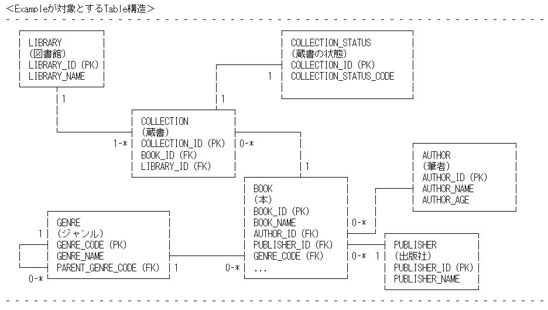

|
 |
|||||
|
# # ******************** # DBFlute-introduction # ******************** # Written by jflute at 2006/09/28 Thu. ※(説明中にex)として載せているSourceの抜粋はJava版とします。(S2DaoもDBFluteも))  // ====================================================================================================== // Intro // ===== // -------------------------------------------------- // DBFluteとは？ // ------------- DBFluteは、S2Daoの利用をサポートするToolです。 ※Apache TorqueのGenerator機能をS2Daoに適応させたものです。 URL：http://db.apache.org/torque/ // -------------------------------------------------- // DBFluteの機能 // ------------- ・S2Daoで利用するDao/EntityをDatabaseのSchema情報を利用して自動生成します。 ・S2Daoの“DTOによるSQL自動生成”の機能を拡張したDTOを自動生成します。 ・その他付加価値的機能 // -------------------------------------------------- // DBFluteのPolicy // --------------- DBFluteは、SQL文を自動生成する機能を有しますが、SQL文を隠蔽するつもりはありません。 簡単なSQLは自動生成し、複雑なものはS2Daoの“SQLファイル”(外部FileにSQLを記述するやり方) を利用して思う存分SQLを書くべきだと考えます。 DBFluteは、S2Daoの利用を促進することを最大の目的とします。 ※DBFluteのSQL自動生成機能のPolicyについては、ConditionBean Policy をご覧下さい。 // ====================================================================================================== // S2Dao // ===== // -------------------------------------------------- // S2Daoについて // ------------- DBFluteの理解にはS2Daoの理解が必要です。 (S2Daoの概要については、[http://s2dao.seasar.org/ja/s2dao.html]を参考に) 作者は、S2Daoの多くある利点のなかで最大の利点を以下のように考えています。 - - - - - - - - - - - - - - SQLを書く環境が整っている。 - - - - - - - - - - - - - - ＜外だしSQL＞ ※S2Daoの“SQLファイル”を利用するやり方のこと A PreparedStatementの'?'の個数ではなく、変数名によるBind変数の解決 B SQLのCommentによるIF分岐の実現 & Test値の配置 (2Way-SQL) o {About A} 作者は、'?'を利用する“外だしSQL”を経験したことがありますが、'?'の順番・個数にProgramが左右され、 間違いを生みやすいのと同時に修正の際にとても時間がかかることを感じました。 S2Daoは、引数名やDTOのProperty名などでBind変数の値を解決することができ、その辺の煩雑さは全く存在しません。 ※Bind変数を利用するのか・単なる文字列置換をするのかの切換えがとても簡単です。 以下のようにBind変数をただの文字列置換に変更することが可能。 ex) /*bookId*/ --> /*$bookId*/ o {About B} よくある要件として、検索一覧画面の検索条件で“入力された値の項目だけでWhere句を構成する”ことがよくあります。 この場合、検索条件の組み合わせの分SQLを用意するのは当然ナンセンスであり、また、Program上でif文を駆使して 文字列連結するのは間違いを生みやすいやり方です(SQLの動作確認がし辛く、どんなSQLなのかがわかりにくい)。 S2Daoは、これを“外だしSQL”内のSQLのCommentによって分岐をさせることが可能です。 ex) BOOK_ID完全一致とBOOK_NAME前方一致の検索 (テスト値は、BOOK_IDが1234でBOOK_NAMEが'S2Dao'で始まるもの) ---------------------------------------------------------------------------------------- /*BEGIN*/where /*IF dto.bookId != null */BOOK.BOOK_ID = /*dto.bookId*/1234/*END*/ /*IF dto.bookName != null*/and BOOK.BOOK_NAME like /*dto.bookName*/'S2Dao' || '%'/*END*/ /*END*/ ---------------------------------------------------------------------------------------- この場合、'dto'に定義されているbookId/bookNameに値が格納されていれば、それぞれの条件が有効になります。 もし、bookIdがnullの場合はBOOK_NAMEの条件だけ有効になり、BOOK_NAMEの不要な'and'は自動的に除去されます。 また、bookIdもbookNameもnullの場合はwhere句自体が除去されます。 そして、その分岐のLogicが埋め込まれている状態で、このSQLは世にあるSQL-Tool(SQL*PlusやQueryAnalyzerなど)にて そのまま動作させることが可能です。これは、“分岐LogicがSQLのCommentで記述できること”そして、 “Test値を配置できること”により実現されています。作者はこの点をとても重要視しています。 “書いたSQLをすぐに実行して動作確認ができる”ということがどれだけありがたいものかは、 開発者なら理解していただけるかと思います。 (画面を起動して(Applicationに反映させて)初めて判明するSQL-Errorがどれほど時間を無駄にしていたことか...) ※UnitTestProgramを記述することにより、SQLの正当性を検証することは可能ではありますが、 まだまだ現場においてUnitTestProgramを書く習慣が身についていないところも多く、 また、UnitTestProgramを書くCostを割けない現場も多いと思われます。 ここでの例は随分とシンプルなものでありますが、一般に画面入力の検索条件は10個以上になることもあります。 そのような場合に、この機能はより威力を発揮するに違いありません。 また、このif分岐機能により、Select句の列・結合Table・OrderBy要素なども動的に変更することが可能であり、 一つのSQL文を複数のModuleで再利用することが容易に可能であります(設計は難しいかも知れませんが...)。 この場合“サジ加減”を気をつけて設計しないと大変ですが、例えば200-300行に渡るSQL文を、 “ちょっとSelectするColumnと結合するTableが違うだけ”・“OrderByが違う”などの理由だけで5個も6個も書くのは、 効率が悪く、そして、修正の際のCostが高いと思われます。 (Project(人)によってやり方は様々かも知れませんが、S2Daoの利用によって自由に設計できることが確かだと思います) ※DBMSのViewやTable-Functionを利用することにより、再利用性というのは実現できるかもしれませんが、 Projectによっては、積極的にそれらを利用しない、もしくは、できない場合が多々あります。 // ====================================================================================================== // DBFlute // ======= // -------------------------------------------------- // S2Daoの問題点 // ------------- S2Daoの提供する機能は素晴らしいものであります。 しかし、いざProjectにて適用しようとすると少し煩雑な点がいくつか存在します。 A get/setを定義するEntityを手動で作成する必要がある。{RELNO/RELKEY/TIMESTAMP/IDなどの定義も同様} B 簡単な検索についても全てSQLを記述する必要がある。 o {About A} この点は、非常にネックになります。特にTorqueやHibernateなどのO/R-Mapperを利用してきた人達等は、 Entityは自動生成するのが当たり前で自分で作成するのは時間の無駄だと考えます。 これは作者も同感で、同じ様に自動生成したいと考えます。 o {About B} S2Daoには、自動でSQL文を作成して実行する機能が存在します。ただ、現時点でその機能は以下のような制限があります。 ・Where句は、Equal条件のみとなる。 ・Select句のColumn/From句のTableは、RELNO/RELKEYにて指定した結合先が固定となる。 ・OrderBy句は固定となる。(ある程度工夫すれば出来なくも無いが) 現実的に、自動生成SQLでCoverできる範囲はそんなに広くないと思われます。 特に、結合先のTableがEntityのRELNO/RELKEYにて静的に決まってしまうのは、利用是非に関わってしまう とても痛い要素であると考えます(Performance調整ができない)。 (EntityをApplicationで利用する結合の組み合わせ分作成するのは得策ではありません) 当然、各Projectの工夫によってこれらの問題を解決できないことはないです。しかし、S2Daoを提案する際に、 この点は非常にNeckになります。特にTorque/Hibernateを経験してきた人たちにとってはこの点は見逃せない問題で、 S2Daoの利用に対して積極的にならない可能性があります。 (作者は実際にこのあたりの問題がネックになってS2Daoの採用を見送ったProjectを見たことがあります。) // -------------------------------------------------- // DBFluteのApproach // ----------------- この問題に対し、DBFluteは以下のようなApproachをとります。 o {About A} Torque-Generatorを流用し、DBのSchema情報からS2DaoのClassやDiconを自動生成する。 Entityについては、Table-AnnotationやRELNO/RELKEY-Annotationなどを定義したものを自動生成する。 Daoついては、Bean-Annotationや基本Method(select/insertなど)ものを自動生成する。 dao.diconについては、生成したDaoのComponent定義を自動生成する。 o {About B} “ConditionBean”なるObjectを導入し、シンプルで簡単なSQLは内部的に自動生成する。 “B”に関する詳細は次に説明致します。 // -------------------------------------------------- // ConditionBean // ------------- ConditionBeanについては、Tips: ConditionBean をご覧下さい。 // -------------------------------------------------- // CustomizeDao // ------------ # ★★★★★★★★★★★★★★★★★★★★★★★★★★★★★★★★★★★★★★★★★★★ # S2Dao-1.1 において、Method単位で戻り値のEntityを指定することが可能になる予定です。 # よって、CustomizeDaoを利用する必要がなくなります。（これは良かったことです） # 将来のバージョンで削除されるかもしれませんのでご注意下さい。 # # ただ、独自のEntityを自動生成する機能は必要となりますので、CustomizeEntityなる新しい # 機能を追加する予定です。｛単にCustomizeDaoのEntityを生成する機能を間借りするだけかも知れませんが...｝ # ★★★★★★★★★★★★★★★★★★★★★★★★★★★★★★★★★★★★★★★★★★★ 以前のCustomizeDaoの記事はこちら // -------------------------------------------------- // {1:n} Loading // ------------- S2Daoでは{1:n}検索をサポートしていません(S2Dao-1.0.XXにおいて)。 DBFluteでのApproachは、Tips: Behavior - one-to-many loading をご覧下さい。 // -------------------------------------------------- // Other // ----- その他、細かい付加機能が付いています。ここでは詳細には触れませんが、以下のようなものがあります。 Behavior (Option) Dao/Entityと対になるClassで、業務Applicationにてよく利用されるMethodが定義されています。 また、ジェネレーションギャップになっているので、拡張Classに独自のMethodを定義することができます。 Behaviorはステートレスなオブジェクトで、singletonとしてdao.diconに定義されます。 ex) BOOKのBehaviorに定義されている主なMethod： - LdListResultBean selectList(LdBookCB cb); // ConditionBeanによる検索の結果をResultBeanにて取得 - LdPagingResultBean selectPage(LdBookCB cb); // ConditionBeanによるPaging検索の結果をResultBeanにて取得 - LdBook selectEntityWithDeletedCheck(LdBookCB cb); // ConditionBeanによる一意検索を存在Check付きで取得 - int insertOrUpdateAfterSelectForUpdate(LdBook entity); // 新規ならInsert、既存ならUpdate - int updateAfterSelectForUpdate(LdBook entity); // SelectForUpdate後に指定したEntityをMergeして更新 →呼び出し側では、new LdBook()したEntity-Instanceに更新したい列の値だけを格納して更新が可能。 CommonColumn (Option) Insert/Updateの際に“登録日時や更新者などの全てのTableに定義される列”に対する値の自動設定を行うInterceptorを、 Propertyの定義に従って自動生成・自動設定します。Daoに設定するかBehaviorに設定するかは選択可能です。 これの利用により、呼び出し側では共通列に現在日時を格納したりSessionからLoginIDを取得して格納したりする共通作業を 実装する必要がありません。 QueryTimeout SQLのTimeout設定です。Propertyで指定することができます。 意外にS2Daoを利用する場合、気軽にこの設定が指定できません。(PreparedStatementを隠蔽しているため) DBFluteではS2Daoの拡張Classにてこの設定を行います。 SqlParameterBean “外だしSQL”を利用する際に、SQLへのParameterが多くなるCaseがあります。 その場合、Methodの引数が膨大になってしまうため、引数ObjectとしてDTOを利用することが多いと思われます。 そのDTOをまた手動で作成するのは面倒なので、PropertyにてBeanの名称と構成する列と型を指定することにより 自動生成します。それをSqlParameterBeanと呼んでいます。 AdditionalForeignKey ForeignKey制約の張られていないDBが時々存在しますが、そのような場合にDBFluteに擬似的にForeignKeyを 認識させることが可能です。それにより、RELKEY/RELNOが自動定義され、ConditionBeanによる結合が可能になります。 OriginalDaoComponent 色々な事情でDaoを手動で作成した場合に、そのDaoをdao.diconに登録できます。 例えば、既にProjectの資産としてDaoが存在していた場合などはこれを利用することでDBFluteのDaoと共存できます。 他にも細かい機能は存在しますが、ここでの紹介はこのくらいにしておきます。 // ====================================================================================================== // Ending // ====== DBFluteは、まだまだ発展途上で課題も多くあります。(2006/09/26現在) - ドキュメントの充実 - S2Dao-VersionUpに伴う修正 - 自動生成されたClassの単体テスト実装(Bug修正含む) - Property設定の簡略化(GUIによる設定など) - Java版とCSharp版のGapの埋め合わせ - JavaDoc-Comment/CSharp-Commentの整備 - (その他) 今後、少しずつ精度を高めていくつもりです。 Project方針におけるS2Daoの採用の決定・実際の開発現場でのS2Daoの利用においてDBFluteがお役に立てれば幸いです。 |